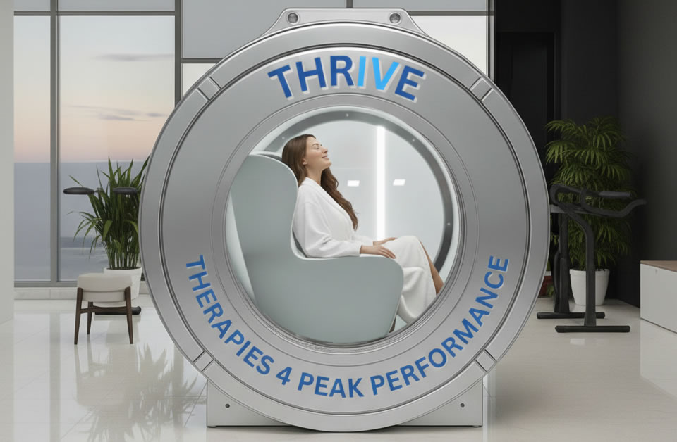

Breathe 100% pure oxygen in a pressurized chamber — physician-supervised HBOT for accelerated healing, brain optimization, and peak athletic performance
Hyperbaric oxygen therapy (HBOT) works on a simple but profound principle: pressure forces oxygen into your bloodstream far beyond what normal breathing achieves. Inside our pressurized chamber, oxygen concentration in your plasma increases up to 1,000% — reaching tissues that normally receive inadequate oxygen due to poor circulation, injury, or inflammation.
That oxygen surge activates healing pathways throughout the body: new blood vessels form (angiogenesis), stem cells mobilize, and anti-inflammatory proteins increase. The results range from dramatically faster recovery from injury and surgery to measurable improvements in brain function, energy levels, and immune resilience.
At Thrive 4 Peak Performance, our THRIVE-branded hyperbaric chamber is operated under direct physician supervision. We serve patients from Alpharetta, Milton, Roswell, Johns Creek, and across North Fulton County.
What happens when your tissues are flooded with pure oxygen
Increases oxygen delivery to injured or recovering tissues dramatically — supporting the body's natural repair processes after surgery, injury, or illness. Athletes use HBOT to return to training weeks faster than normal recovery timelines.
High oxygen concentrations improve neuroplasticity and cognitive function. HBOT is increasingly used for traumatic brain injury (TBI), post-COVID brain fog, and age-related cognitive decline — with strong patient-reported outcomes.
Research shows HBOT triggers your body to mobilize its own stem cells from bone marrow into circulation — providing a natural regenerative effect that supports long-term tissue repair and immune function.
Excess oxygen directly suppresses inflammatory mediators responsible for chronic pain, swelling, and systemic disease. HBOT is one of the most powerful natural anti-inflammatory tools available.
Hyperbaric oxygen accelerates healing of chronic wounds, diabetic ulcers, and post-surgical sites by promoting collagen synthesis and destroying anaerobic bacteria that impede recovery.
Pre-event HBOT improves oxygen availability for sustained performance. Post-event sessions clear lactic acid and reduce muscle damage — a protocol used by professional athletes to maintain training volume and consistency.
Before your first session, our physician reviews your health history and goals. We confirm that HBOT is appropriate and build a protocol — number of sessions, pressure, and duration — tailored specifically to you.
You settle into our comfortable, fully enclosed chamber and breathe 100% oxygen through a mask or hood. The session lasts 60–90 minutes. Most patients read, listen to music, or simply rest. You'll notice your ears feel pressure during the first few minutes — like descending in a plane — which equalizes quickly.
Most patients feel energized and clear-headed immediately after. There's no downtime — you can return to your normal activities right away. Benefits compound over a course of sessions, with many patients noticing progressive improvements in energy, focus, and physical recovery.
Our physician evaluates every patient before the first session.
HBOT involves breathing 100% pure oxygen in a pressurized chamber at 1.5–2x atmospheric pressure. This drives dramatically more oxygen into your bloodstream and plasma, activating healing, regenerative, and anti-inflammatory pathways throughout the body.
Typically 60–90 minutes, during which you breathe pure oxygen comfortably in the chamber. You can read, listen to music, or rest.
For athletic recovery and general performance, 5–10 sessions is a common starting point. For specific medical goals (TBI, wound healing, post-surgical recovery), 20–40 sessions is standard. Your physician will provide a personalized recommendation.
Yes. Thrive 4 Peak Performance offers physician-supervised HBOT at 3568 Old Milton Pkwy, Alpharetta, GA 30005 — one mile east of Avalon. Easily accessible from Milton, Roswell, Johns Creek, and Cumming.
Yes — HBOT combines powerfully with IV therapy (particularly NAD+ and high-dose vitamin C) and red light therapy for a comprehensive recovery and performance protocol. Our physician can design a combined program.
Free consultations available. Most appointments within 48 hours.
Book Free ConsultationOr call (470) 359-6195